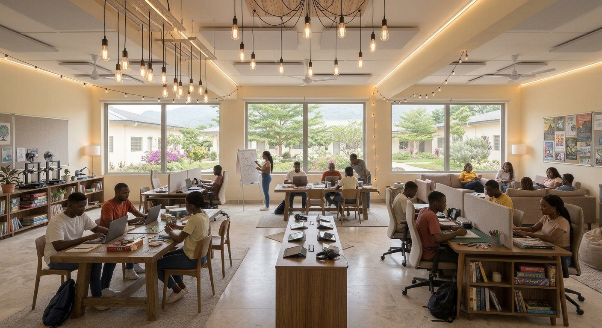

Comfortable rooms
A clean, ventilated room with suitable sleeping space, storage and room to study.
THE DETAILS THAT MATTER
Useful facilities can make everyday life easier and support students' academic routines.
A clean, ventilated room with suitable sleeping space, storage and room to study.
A desk, lighting and a reasonably quiet area can help students focus on coursework.
Ask about locks, lighting, entry arrangements, emergency contacts and neighbourhood safety.
Check water availability, toilet and bathroom conditions, drainage and waste collection.
Confirm the reliability, cost and availability of internet access and electricity.
Consider walking routes, public transport, travel time and the cost of commuting to campus.

SMART QUESTIONS
Photos can make a place look attractive, but students should verify the actual condition and terms before committing. If possible, visit with someone you trust and keep written records of agreements and payments.
Contact us